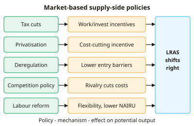

A-level Economics Year 13 · Topic 14
Supply-side policies and macroeconomic policy conflicts
This topic evaluates supply side policies and the conflicts between macroeconomic objectives.
We will compare market based and interventionist supply side policies, and judge their effects on long run aggregate supply.
Then we analyse policy trade offs, like inflation versus unemployment, and how to choose the right mix of policies.
- 5 subtopics
- 214 questions
- Free: 14.1 notes and 10 questions
In this topic
- 14.1Market-based supply-side policies: tax cuts, privatisation, deregulation, competition and labour market reformFree below · 75 questions
- 14.2Interventionist supply-side policies: education and training, infrastructure, R&D, industrial and regional policyOpen in Full Marks · 32 questions
- 14.3Evaluating supply-side policies: effects on LRAS and macroeconomic objectives, costs and time lagsOpen in Full Marks · 44 questions
- 14.4Macroeconomic policy objectives, conflicts and trade-offsOpen in Full Marks · 33 questions
- 14.5Choosing the policy mix: demand-side versus supply-side policy and government failure in macro policyOpen in Full Marks · 30 questions
14.1 · Free notes
Market-based supply-side policies: tax cuts, privatisation, deregulation, competition and labour market reform

Key points
- Supply-side policies aim to raise potential output by shifting LRAS to the right. Market-based policies do this by freeing markets, increasing competition and strengthening incentives. They rely less on government spending.
- Tax cuts: lower income tax raises the reward for work (the substitution effect), while lower corporation tax encourages investment and FDI. The income effect may offset this, because workers can reach their target income with fewer hours.
- Laffer curve: if the tax rate is above the revenue-maximising rate, cutting it can raise tax revenue by increasing effort and reducing avoidance. Below that rate, a cut loses revenue.
- Privatisation transfers assets from the public to the private sector (e.g. British Telecom 1984, Royal Mail 2013). The profit motive is expected to cut X-inefficiency and boost productive efficiency. Without regulation or competition it risks a private monopoly.
- Deregulation removes rules and licensing barriers (e.g. the 1985 bus deregulation outside London). It lowers barriers to entry, makes markets more contestable and cuts costs. Risks include safety problems, negative externalities and financial instability, as in 2008.
- Competition policy is enforced by the CMA under the Competition Act 1998 and Enterprise Act 2002. It blocks harmful mergers and fines cartels and abuse of dominance, which promotes efficiency and dynamic efficiency.
- Labour market reform includes weaker trade union power (1980s Employment Acts), more flexible contracts and lighter employment protection. These aim to cut structural unemployment and the NAIRU. Critics point to insecure work (e.g. zero-hours contracts) and wage suppression.
- Welfare reform reduces the replacement rate (benefits relative to wages), tightens conditionality and tapers withdrawal, as in Universal Credit. This increases the incentive to take work and reduces voluntary unemployment.
- Trade liberalisation and removing capital controls increase competition and FDI, which spurs efficiency. The costs are job losses in uncompetitive sectors and structural unemployment.
- Advantages: low direct cost to government, some policies work quickly (tax changes), and they improve efficiency and incentives. Disadvantages: wider income inequality, fewer protections for workers, unregulated externalities and uncertain behavioural responses.
- Exam technique: show the effect with an AD/AS diagram (LRAS shifting right from Y1 to Y2, with lower price level and higher real output). Then evaluate on time lags, magnitude, equity and the state of the economy.
In more detail
- Worked replacement rate: benefits of £250 a week against a potential wage of £400 → replacement rate = 62.5%; lowering it increases the incentive to work.
- Union reform: UK union membership fell from about 13 million in 1979 to around 6–7 million today, after 1980s laws restricted strikes and closed shops.
- Freeports: UK freeports offer tax reliefs and simpler customs rules to attract investment, though critics say they may simply move activity from elsewhere.
- Exam tip: for each policy show the mechanism to LRAS (e.g. tax cut → stronger work incentives → more labour supplied → LRAS shifts right), then evaluate.
Practice
Market-based supply-side policies: tax cuts, privatisation, deregulation, competition and labour market reform: 10 questions
Pick an answer to check it, or open the answer for the explanation.
1. Which of the following is a market-based supply-side policy?
- Building a new rail link
- Subsidising university research
- Cutting the top rate of income tax to encourage effort
- Increased spending on apprenticeships
Show answer
C: Cutting the top rate of income tax to encourage effort. Tax cuts aim to strengthen work incentives and free up markets. Training, R&D subsidies and infrastructure are interventionist policies funded by government.
2. The Laffer curve suggests that a cut in the tax rate raises tax revenue only if the initial rate is:
- Zero
- Below the revenue-maximising rate
- Above the revenue-maximising rate
- Exactly at the revenue-maximising rate
Show answer
C: Above the revenue-maximising rate. Beyond the revenue-maximising rate, a lower rate boosts effort, enterprise and compliance enough to raise revenue. Below it, a cut reduces revenue.
3. A key argument in favour of privatisation is that it:
- Guarantees lower prices for consumers
- Ensures positive externalities are fully provided
- Eliminates natural monopoly power
- Introduces a profit motive that reduces X-inefficiency
Show answer
D: Introduces a profit motive that reduces X-inefficiency. Private owners seek profit, which pressures them to cut waste (X-inefficiency). Prices are not guaranteed to fall and natural monopoly remains unless regulated.
4. Deregulating a market, such as local bus services, is intended to:
- Lower barriers to entry and increase competition
- Raise minimum quality standards
- Increase the market power of existing firms
- Raise government spending
Show answer
A: Lower barriers to entry and increase competition. Removing licensing and other rules makes the market more contestable, so new firms can enter, which increases competition and efficiency.
5. A worker's take-home pay rises from £30,000 to £31,200 after an income tax cut. By what percentage has net income risen?
- 12%
- 4%
- 3.85%
- 1.2%
Show answer
B: 4%. Increase = £1,200. Percentage change = 1,200 ÷ 30,000 × 100 = 4%. Dividing by the new figure (3.85%) is a common error.
6. Why might a cut in income tax fail to increase the hours people work?
- The substitution effect makes leisure relatively cheaper
- The income effect may lead some to choose more leisure
- Tax cuts reduce the gross wage rate
- Labour supply is always perfectly elastic
Show answer
B: The income effect may lead some to choose more leisure. Higher take-home pay lets workers reach their target income with fewer hours (income effect). The substitution effect makes leisure relatively more costly.
7. Which labour market reform is intended to reduce the natural rate of unemployment?
- Raising unemployment benefits
- Raising the minimum wage well above the median wage
- Reforming welfare to improve work incentives
- Strengthening trade union bargaining power
Show answer
C: Reforming welfare to improve work incentives. Welfare reform that improves work incentives and reduces the replacement rate cuts voluntary and structural unemployment, lowering the NAIRU.
8. Which UK body investigates mergers and cartels as part of competition policy?
- Office for Budget Responsibility
- Monetary Policy Committee
- Prudential Regulation Authority
- Competition and Markets Authority
Show answer
D: Competition and Markets Authority. The CMA enforces the Competition Act 1998 and Enterprise Act 2002. The OBR forecasts, the MPC sets interest rates and the PRA supervises banks.
9. A government privatises a state monopoly but introduces no competition or regulation. What is the most likely risk?
- A private monopoly using market power to raise prices
- Lower prices due to dynamic efficiency
- An immediate rightward shift of LRAS
- Falling profits for the new owners
Show answer
A: A private monopoly using market power to raise prices. Transferring ownership without competition or regulation creates a private monopoly with pricing power, which can reduce consumer welfare.
10. Compared with interventionist policies, market-based supply-side policies generally:
- Correct positive externalities directly
- Cost the government less directly but may widen inequality
- Raise government spending significantly
- Have no effect on incentives
Show answer
B: Cost the government less directly but may widen inequality. Market-based policies work through incentives and competition rather than spending, so they cost less directly. They can widen income inequality.
Keep going in Full Marks
Full Marks has 75 questions on Market-based supply-side policies: tax cuts, privatisation, deregulation, competition and labour market reform (65 more than here), set out in practice levels. You also get notes and 3D models for all 5 subtopics of Supply-side policies and macroeconomic policy conflicts, plus games, timed exams and past papers.